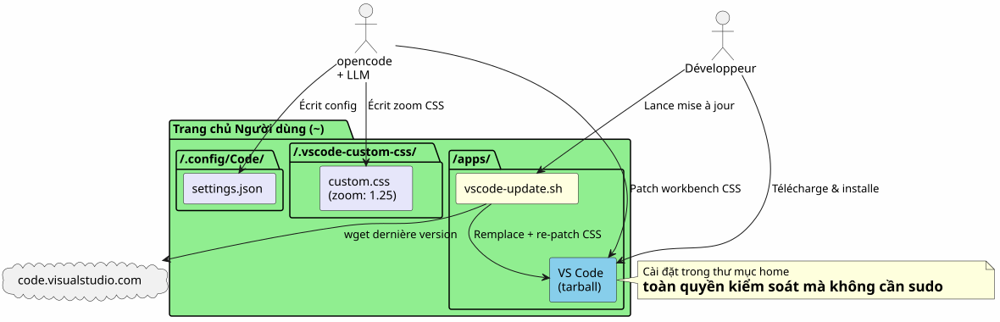
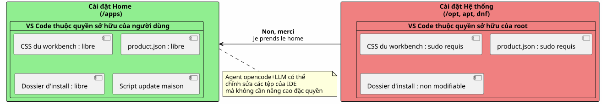
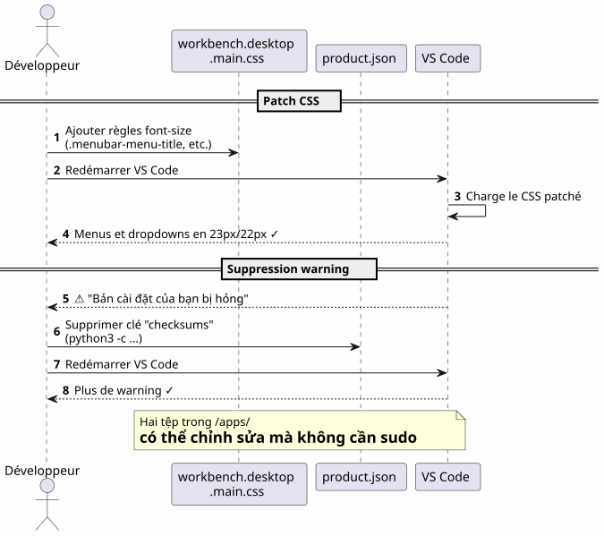
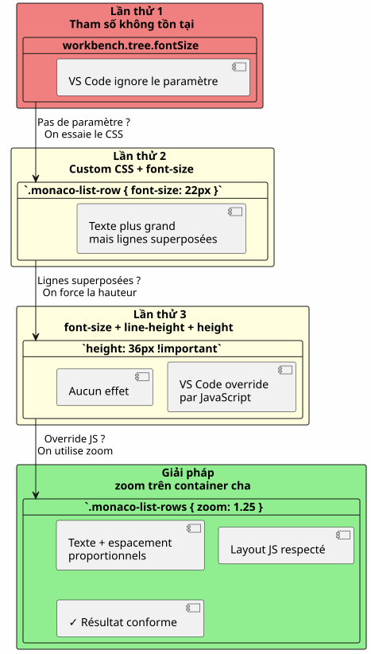
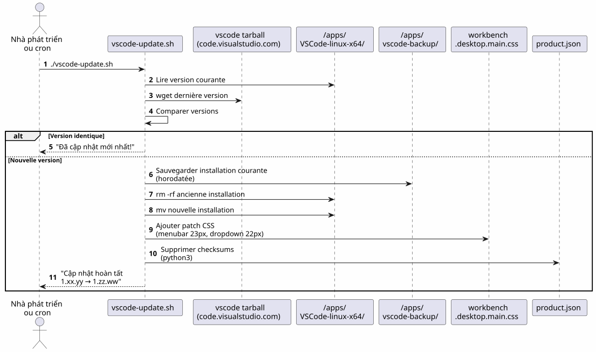
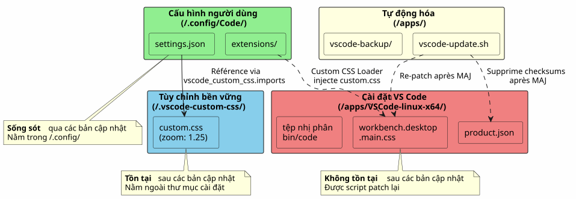
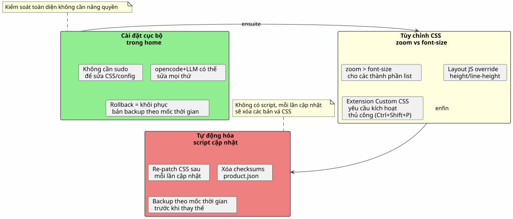

VS Code trong Home: cài đặt cục bộ và tùy chỉnh phông chữ không cần sudo
Đăng ngày 17 April 2026
Tại sao nên cài đặt VS Code trong`/opt`hoặc thông qua`apt`khi chúng ta có thể đặt nó vào trang chủ của mình và biến IDE thành một sân chơi mà không bao giờ phải gõ`sudo`? Đây là câu chuyện về một lần cài đặt cục bộ, theo sau đó là một cuộc chiến gay gắt để phóng to phông chữ của menu và trình quản lý tệp tin.
- mục lục
-
[]
Tổng quan về lộ trình

Lý do: VS Code trong Home
Vấn đề với việc cài đặt hệ thống
VS Code được cài đặt thông qua`apt`, dnf`hoặc trong/opt`khóa các tệp của ứng dụng bằng quyền root. Mọi thay đổi đối với CSS gốc, của`product.json`hoặc của thư mục cài đặt yêu cầu`sudo`Vui lòng cung cấp văn bản cần dịch.
Hoặc, khi chúng ta sử dụngopencode(công cụ CLI để điều khiển LLM trên mã nguồn của mình), agent cần có khả năng:
-
Viết vào các tệp cấu hình (
~/.config/Code/User/settings.json) — cái này đã có trong home rồi -
Chỉnh sửa các asset của IDE (CSS của workbench,
product.json) cho các tùy chỉnh nâng cao — điều này bị chặn nếu không có sudo
Giải pháp: một bản cài đặt cục bộ
Chúng ta tải xuống tệp lưu trữ tarball chính thức và giải nén trực tiếp vào`~/apps/`Hãy cung cấp văn bản bạn muốn dịch.
mkdir -p ~/apps
cd ~/apps
wget "https://code.visualstudio.com/sha/download?build=stable&os=linux-x64" -O vscode.tar.gz
tar -xzf vscode.tar.gz
rm vscode.tar.gzKhi đó mã nhị phân nằm ở`~/apps/VSCode-linux-x64/bin/code`. Không có`sudo`là cần thiết để đọc, sửa đổi hoặc thay thế bất kỳ tệp nào dưới`~/apps/VSCode-linux-x64/`Vui lòng cung cấp nội dung cần dịch.
Những lợi ích cụ thể

| Lợi thế | Chi tiết |
|---|---|
Không dùng sudo |
Tất cả các tệp của IDE đều thuộc về người dùng |
Chỉnh sửa trực tiếp CSS |
Có thể patch`workbench.desktop.main.css`không leo thang đặc quyền |
Script cập nhật nội bộ |
Một script shell đơn giản tự động tải xuống, thay thế và repatch |
Cách ly |
Cài đặt hệ thống không bị ô nhiễm; rollback = xóa thư mục |
Tùy chỉnh phông chữ của menu chính
Nhận định
Phông chữ mặc định của menu chính (File, Edit, View…) và các menu thả xuống quá nhỏ. VS Code không cung cấp bất kỳ cài đặt nào để thay đổi nó.
Kỹ thuật: patch CSS trực tiếp
Chúng ta thêm CSS vào cuối tệp`workbench.desktop.main.css`Hãy cung cấp văn bản cần dịch.

CSS_FILE="$HOME/apps/VSCode-linux-x64/resources/app/out/vs/workbench/workbench.desktop.main.css"
cat >> "$CSS_FILE" << 'EOF'
.menubar-menu-title{font-size:23px!important}
.menubar>.menubar-menu-button{font-size:23px!important}
.monaco-menu-option{font-size:22px!important;line-height:34px!important}
.monaco-menu .action-label:not(.codicon){font-size:22px!important}
.menubar-menu-items-holder .monaco-menu .action-item .action-label{font-size:22px!important}
EOFXóa cảnh báo toàn vẹn
VS Code phát hiện các thay đổi trong các tệp của nó và hiển thị một biểu ngữ "Your installation is corrupt". Để tránh điều này, chúng ta xóa các checksum của`product.json`Vui lòng cung cấp văn bản cần dịch.
import json
product_json = "$HOME/apps/VSCode-linux-x64/resources/app/product.json"
with open(product_json, 'r') as f:
data = json.load(f)
data.pop('checksums', None)
with open(product_json, 'w') as f:
json.dump(data, f, indent=2)Sau khi khởi động lại, không còn cảnh báo nữa và các menu cuối cùng đã có thể đọc được.
Tùy chỉnh phông chữ của ngăn Explorer — cuộc chiến
Lần thử 1: một tham số không tồn tại
Trước hết, hãy thử tham số mặc định`workbench.tree.fontSize`trong`settings.json`Vui lòng cung cấp văn bản cần dịch.
{
"workbench.tree.fontSize": 20
}Kết quả:không có tác dụng. Tham số này không tồn tại trong VS Code. Đây là minh chứng cho việc các tham số không được nhận diện sẽ bị bỏ qua một cách âm thầm.
Lần thử 2: tiện ích mở rộng Custom CSS and JS Loader
Cài đặt tiện ích mở rộng`be5invis.vscode-custom-css`Vui lòng cung cấp văn bản tiếng Pháp cần dịch.
~/apps/VSCode-linux-x64/bin/code --install-extension be5invis.vscode-custom-cssChúng ta tạo một tệp CSS trong`~/.vscode-custom-css/custom.css`với các bộ chọn nhắm đến các phần tử của trình duyệt:
.monaco-tree-rows .monaco-tree-row,
.sidebar .monaco-list-row,
.explorer-viewlet .monaco-list-row,
.monaco-list-row .monaco-icon-label {
font-size: 22px !important;
line-height: 36px !important;
}Và chúng ta tham chiếu tệp này trong settings:
{
"vscode_custom_css.imports": [
"file:///home/user/.vscode-custom-css/custom.css"
]
}Kết quả:các thay đổi không được áp dụngVui lòng cung cấp nội dung cần dịch.
Cái bẫy: phải kích hoạt tiện ích mở rộng mỗi lần sử dụng
Tài liệu của tiện ích mở rộng này khá kín tiếng về điểm quan trọng này: sau mỗi lần thay đổi CSS custom, cần phảibắt buộcchạy lệnh từ palette:
-
Ctrl+Shift+P→ nhậpKích hoạt CSS và JS tùy chỉnh -
VS Code yêu cầu khởi động lại → chấp nhận
Nếu không có bước này, CSS sẽ không bao giờ được inject vào IDE.
Lần thử 3: các đường thẳng chồng lên nhau
Ngay cả với`font-size: 22px` et line-height: 36px, các chữ cái có phần kéo dài (g, p, f, b) bị tràn sang các dòng lân cận. Người ta cố gắng thêm`height` et `min-height`Vui lòng cung cấp văn bản cần dịch.
.monaco-list-row {
height: 36px !important;
min-height: 36px !important;
}Kết quả:không có thay đổi nàoVS Code tính toán chiều cao của các dòng bằng JavaScript và ghi đè các giá trị CSS.
Giải pháp: zoom trên vùng chứa cha

Thay vì cố gắng chống lại layout JavaScript, chúng ta sử dụng thuộc tính`zoom`trên vùng chứa các dòng:
.explorer-viewlet .monaco-list-rows,
.sidebar .monaco-list-rows {
zoom: 1.25;
}`zoom`phóng to đồng nhất phần hiển thị của container — văn bản VÀ khoảng cách — mà không làm hỏng bố cục được tính toán bởi công cụ JavaScript của VS Code. Hệ số 1.25 tương ứng xấp xỉ với việc chuyển từ 13px sang 16px.
Kết quả:tên tệp cuối cùng đã có thể đọc được, các dòng được giãn cách chính xácVui lòng cung cấp văn bản cần dịch.
Tóm tắt về các selectors và những gì hoạt động
| Tiếp cận | CSS | Kết quả |
|---|---|---|
|
|
Văn bản lớn hơn nhưng các dòng bị chồng lên nhau |
|
|
Không có hiệu ứng (override JS) |
|
|
Thành công — văn bản + khoảng cách tỷ lệ |
Kịch bản cập nhật tự động

Vấn đề
Khi VS Code cập nhật, nó sẽ thay thế thư mục cài đặt vàxóa tất cả các bản patch CSS. Cần phải áp dụng lại các thay đổi một cách thủ công mỗi lần.
Script `vscode-update.sh
Chúng ta tạo`~/apps/vscode-update.sh`Vui lòng cung cấp văn bản cần dịch.
#!/bin/bash
set -e
VSCODE_DIR="$HOME/apps/VSCode-linux-x64"
BACKUP_DIR="$HOME/apps/vscode-backup"
TEMP_DIR="/tmp/vscode-update"
MENUBAR_FONT_SIZE="23px"
DROPDOWN_FONT_SIZE="22px"
echo "=== VS Code Local Updater ==="
CURRENT_VERSION=$("$VSCODE_DIR/bin/code" --version 2>/dev/null | head -1)
echo "Current version: $CURRENT_VERSION"
echo "Downloading latest VS Code..."
mkdir -p "$TEMP_DIR"
wget -q "https://code.visualstudio.com/sha/download?build=stable&os=linux-x64" \
-O "$TEMP_DIR/vscode.tar.gz"
echo "Extracting..."
mkdir -p "$TEMP_DIR/extracted"
tar -xzf "$TEMP_DIR/vscode.tar.gz" -C "$TEMP_DIR/extracted"
NEW_VERSION=$("$TEMP_DIR/extracted/VSCode-linux-x64/bin/code" \
--version 2>/dev/null | head -1)
echo "New version: $NEW_VERSION"
if [ "$CURRENT_VERSION" = "$NEW_VERSION" ]; then
echo "Already up to date!"
rm -rf "$TEMP_DIR"
exit 0
fi
echo "Backing up current installation..."
mkdir -p "$BACKUP_DIR"
cp -r "$VSCODE_DIR" "$BACKUP_DIR/VSCode-linux-x64-$(date +%Y%m%d-%H%M%S)"
echo "Updating..."
rm -rf "$VSCODE_DIR"
mv "$TEMP_DIR/extracted/VSCode-linux-x64" "$VSCODE_DIR"
rm -rf "$TEMP_DIR"
CSS_FILE="$VSCODE_DIR/resources/app/out/vs/workbench/workbench.desktop.main.css"
echo "Re-applying custom CSS patch \
(menubar=${MENUBAR_FONT_SIZE}, dropdown=${DROPDOWN_FONT_SIZE})..."
cat >> "$CSS_FILE" << CSSEOF
.menubar-menu-title{font-size:${MENUBAR_FONT_SIZE}!important}\
.menubar>.menubar-menu-button{font-size:${MENUBAR_FONT_SIZE}!important}\
.monaco-menu-option{font-size:${DROPDOWN_FONT_SIZE}!important;\
line-height:34px!important}\
.monaco-menu .action-label:not(.codicon)\
{font-size:${DROPDOWN_FONT_SIZE}!important}\
.menubar-menu-items-holder .monaco-menu .action-item .action-label\
{font-size:${DROPDOWN_FONT_SIZE}!important}
CSSEOF
PRODUCT_JSON="$VSCODE_DIR/resources/app/product.json"
if [ -f "$PRODUCT_JSON" ]; then
echo "Removing checksums to prevent integrity warning..."
python3 -c "
import json
with open('$PRODUCT_JSON','r') as f: data=json.load(f)
data.pop('checksums', None)
with open('$PRODUCT_JSON','w') as f: json.dump(data,f,indent=2)
print('Done.')
"
fi
echo "=== Update complete: $CURRENT_VERSION -> $NEW_VERSION ==="Kịch bản:
-
Tải xuống phiên bản ổn định mới nhất
-
Kiểm tra xem phiên bản có khác với phiên bản hiện tại hay không
-
Sao lưu bản cài đặt hiện tại (có dấu thời gian) vào`~/apps/vscode-backup/`
-
Thay thế thư mục cài đặt
-
Áp dụng lạibản patch CSS của menu chính
-
Xóa các checksums de `product.json`để tránh cảnh báo về tính toàn vẹn
LƯU Ý: Các tùy chỉnh của bảng Explorer thông qua tiện ích mở rộng Custom CSS và tệp`~/.vscode-custom-css/custom.css`vẫn tồn tại sau các bản cập nhật vì chúng nằm ngoài thư mục cài đặt.
Các tệp liên quan — tổng quan

| Đường dẫn | Vai trò | Có tồn tại sau các bản cập nhật không? |
|---|---|---|
|
Cài đặt IDE |
Không (đã thay thế) |
|
CSS của workbench (menu, dropdowns) |
Không (được vá lại bởi script) |
|
Checksum toàn vẹn |
Không (đã được làm sạch lại bởi script) |
|
Kịch bản cập nhật tự động |
Vâng |
|
Cài đặt người dùng (fontSize, custom CSS) |
Có |
|
CSS tùy chỉnh cho Explorer (zoom) |
Vâng |
Bài học kinh nghiệm

Cài đặt trong home sẽ giải phóng tất cả
Một bản cài đặt cục bộ trong`~/apps`mang lại quyền kiểm soát toàn diện đối với VS Code:
-
Không có`sudo`để sửa đổi CSS hoặc cấu hình
-
Agent opencode+LLM có thể ghi vào các tệp cấu hình và assets của IDE
-
Hoàn tác đơn giản: khôi phục bản sao lưu có dấu thời gian
zoom` > font-size cho các thành phần list
VS Code kiểm soát chiều cao của các dòng thông qua JavaScript. Chỉnh sửa`font-size`mà không thể thay đổi chiều cao được cấp bởi layout engine sẽ khiến văn bản bị tràn. Thuộc tính`zoom`trên vùng chứa cha sẽ phóng to mọi thứ theo tỷ lệ và khắc phục vấn đề này.
Tiện ích mở rộng Custom CSS yêu cầu phải được kích hoạt rõ ràng
Đây không phải là một tham số "thiết lập một lần rồi thôi". Mỗi khi thay đổi tệp CSS tùy chỉnh, bạn cần chạy lại "Enable Custom CSS and JS" từ bảng lệnh (Ctrl+Shift+P).
Một script cập nhật là không thể thiếu
Nếu không có script, mỗi bản cập nhật của VS Code sẽ xóa các bản vá CSS của workbench. Script`vscode-update.sh`tự động hóa việc tải xuống, thay thế, vá lỗi lại và dọn dẹp checksums.
Tham chiếu nhanh
-
Tải xuống VS Code: https://code.visualstudio.com/Download
-
Tiện ích mở rộng Custom CSS and JS Loader :`be5invis.vscode-custom-css`
-
Lỗi VS Code yêu cầu một tham số gốc cho phông chữ của Explorer:https://github.com/microsoft/vscode/issues/149[github.com/microsoft/vscode#149]